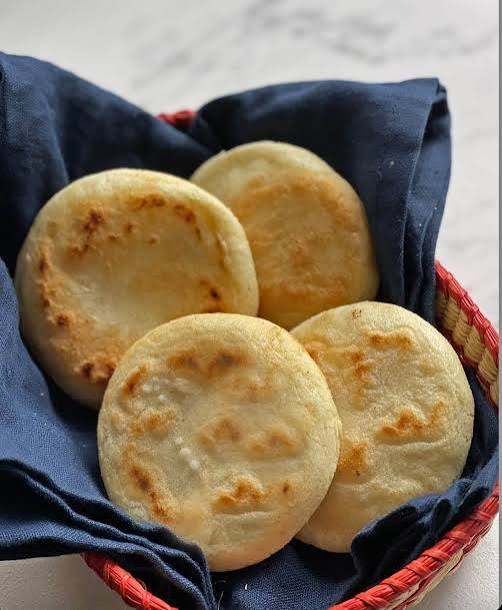

Para empezar, vierte en un bol una taza de agua
tibia con una pizca de sal y añade poco a poco
una taza de harina de maíz precocida. Mezcla
con los dedos de forma constante para evitar
que se formen grumos, y amasa bien durante un
par de minutos hasta obtener una textura suave,
compacta y moldeable que no se pegue a las
manos. Deja reposar la masa un momento, divide
en porciones, forma bolas uniformes y
aplánalas suavemente con las palmas para
darles la clásica forma de disco, cuidando
que los bordes no se agrieten. Calienta un
budare o una sartén antiadherente a fuego m
edio con apenas un toque de aceite.
Cocina las arepas unos cinco minutos por cada
lado hasta que se doren y se forme una capa
crujiente por fuera; sabrás que están listas
si al darles un pequeño golpe en el centro
se escuchan huecas. Finalmente, ábrelas con
cuidado por la mitad con un cuchillo de
sierra, úntales un toque de mantequilla al
gusto y rellénalas generosamente con bastante
queso blanco rallado (ya sea llanero si las
prefieres saladitas, o queso palmita) para
que se derrita ligeramente con el calor
residual. ¡A disfrutar!